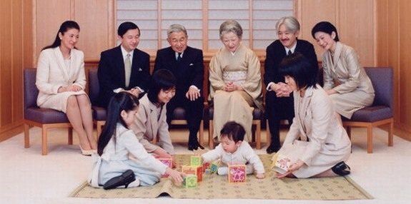

Istoric si evolutie politica

Leagănul unei vechi culturi şi civilizaţii, Japonia a cunoscut o tumultoasă dezvoltare politică, perioade de război civil şi lupte pentru supremaţie, precum şi câteva războaie importante cu statele vecine. Organizarea politică a ţării a alternat între un regim centralizat şi autocratic şi descentralizarea ţării, sub conducerea unor lideri locali sau unor familii feudale[1]. Primul stat japonez - Yamato - a fost constituit în anul 400 după Christos, în insula Honshu, fiind puternic influenţat de civilizaţia chineză. El şi-a extins, în următoarele secole, autoritatea asupra întregului Arhipelag Nipon, dar şi asupra părţii meridionale a Coreei. Tradiţia japoneză vorbeşte despre un puternic stat centralizat în anii 660 după Christos, proclamat odată cu dobândirea puterii de către primul împărat Jimmu. În epoca Nara (710-794), Japonia se transformă într-o monarhie absolută şi se întemeiază pe un puternic aparat birocratic, iar capitala imperiului este stabilită la Kyoto (794). Perioada care urmează - perioada şogunatului, 1192-1867 - este marcată prin slăbirea autorităţii regale şi preluarea puterii efective de către comandantul militar suprem (şogun). În această perioadă funcţia imperială se trasnformă de fapt într-o funcţie ceremonială, decorativă. Perioada şogunatului nu este lipsită de confruntări şi lupte interne, ţara fiind puternic marcată de confruntările dintre marii feudali, conducători ai diferitelor familii. Familiile feudale se succedau la putere în epoca feudală impunând conducători de fapt ai ţării. Astfel, familia Fujiwara şi-a asumat puterea în secolul XI, dar ascensiunea sa era obstaculată de membrii altor familii puternice. De fapt, primul guvern militar al şogunatului a fost stabilit în 1192 de către samuraiul Mimamoto Yoritomo. În timpul şogunatului Kamakura (1192-1333), Japonia a trebuit să facă faţă invaziei mongole şi războiului cu mongolii, care au slăbit puterea şogunatului Kamakura. Perioada şogunilor Ashikaga (1338-1573) s-a caracterizat prin războaie dintre familiile puternice. O unificare politică este iniţiată de Oda Nobunaga şi înfăptuită de Toyotomi Hideyoshi (în 1590). Unificarea ţării nu intervine totuşi decât după moartea lui Hideyoshi, în 1598, când Tokugawa Ieyasu, unul dintre sprijinitorii lui Hideyosi, şi-a înfrânt principalii rivali în bătălia de la Sekigahara.

Perioada şogunatului Tokugawa (1603-1867) se caracterizează prin politica de izolaţionism, care prohibea orice contacte cu străinii. Cu toate acestea, în această perioadă se fac excepţii în favoarea negustorilor olandezi. Perioada Tokugawa - perioadă de pace şi de stabilitate - aduce cu sine o dezvoltare a economiei şi a culturii. Spre sfârşitul perioadei Tokugawa încep să fie totuşi permise schimburile cu străinii, iar penetraţia acestora devine o realitate. Restaurarea puterii imperiale are loc în 1868, odată cu încoronarea împăratului Meiji. Urmează o perioadă de puternică dezvoltare economică, benefică pentru Japonia, şi chiar de stabilitate politică.
Perioada Meiji se caracterizează prin înlăturarea structurilor feudale şi printr-o puternică dezvoltare capitalistă, după modelul european şi nord-american. Pe plan juridic, evenimentul cel mai important îl constituie adoptarea Constituţiei din 1889, constituţie "concedată" de împărat şi care putea fi amendată numai din iniţiativa acestuia. Prevederile Constituţiei erau, totuşi, generale. Astfel, drepturile şi libertăţile concedate urmau să fie precizate prin lege. In cazul în care Dieta refuza să aprobe bugetul, urmau să fie aplicate prevederile bugetului anului precedent. Persoana împăratului era "sacră şi inviolabilă"; el era comandantul suprem al armatei, putea să declare război şi să încheie pacea, să dizolve Camera inferioară a Parlamentului. Parlamentul se compunea din două Camere: Camera nobililor, alcătuită din membri de drept şi alte persoane desemnate de către împărat, şi Camera deputaţilor, aleasă prin sufragiu censitar.După capitularea Japoniei, la 9 august 1945, urmează o perioadă de ocupaţie a acesteia de către forţele americane. Treptat, în condiţiile războiului rece, relaţiile Japoniei cu S.U.A. încep să se normalizeze, iar în 1951 este încheiat un Tratat de pace separat cu S.U.A. şi Marea Britanie şi un "Tratat de securitate" nipono-american. Încetarea stării de război şi reluarea relaţiilor diplomatice cu U.R.S.S. în 1956 nu sunt urmate de evoluţii spectaculoase, datorită conflictului teritorial legat de ocuparea insulelor Kurile de Sud în 1945 de către trupele sovietice. După ce a dominat timp de aproape patru decenii viaţa politică a Japoniei, Partidul Liber Democrat a pierdut, în urma alegerilor din 18 iulie 1993, majoritatea absolută în Camera inferioară a Parlamentului. Au fost constituite, în consecinţă, un Guvern de coaliţie condus de Morihiro Hosokawa (6 august 1993), căruia i-a urmat un cabinet minoritar prezidat de Tsutomu Hata (25 aprilie 1994). După retragerea lui Hata, Parlamentul a acordat încrederea sa unui Guvern de coaliţie condus de Tomiichi Murayama, preşedintele Partidului Social-Democrat. În urma alegerilor anticipate din 1996, Partidul Liber-Democrat a revenit din nou la conducerea ţării. Alegerile din 2000 consacră victoria unei coaliţii compuse din Partidul Liberal Democrat, Partidul Komeito şi Partidul Conservator.În ce priveşte regimul politic din Japonia, autorii Enciclopediei Universale apreciază că ar fi dificil de încadrat Japonia într-una din marile categorii cunoscute ale regimurilor politice[4]. Dacă japonezii sunt unanimi în a admite că ţara lor practică un regim parlamentar de tip englez, ei nu folosesc expresii cum ar fi "democraţia japoneză", sau "monarhia niponă". Japonia, care a încetat să fie un imperiu, nu a devenit o democraţie şi cu atât mai puţin o republică. "Această dificultate în criteriul unei definiţii juridice ţine de slăbiciunea reflectării constituţionale în Japonia.
Parlamentul
Constituția Japoniei specifică faptul că "cel mai înalt organism de putere în stat" este parlamentul bicameral, Dieta Japoniei. Dieta constă din Camera Reprezentanților (Camera inferioară sau Shūgi-in) cu 480 de locuri, aleasă prin vot popular, la fiecare patru ani sau la dizolvare, și o Cameră a Consilierilor (Camera superioară sau Sangi-in) de 242 de locuri, ai cărei membri aleși popular au mandate de șase ani. Există vot universal pentru adulți (peste 20 de ani), cu vot secret pentru toate oficiile elective. Cabinetul este compus dintr-un Prim Ministru și miniștri de stat, și răspunde direct Dietei. Primul Ministru trebuie să fie membru al Dietei și este desemnat de colegii săi. Primul Ministru are puterea de a numi sau demite miniștri, majoritatea acestora fiind, obligatoriu, membri ai Dietei, toți membrii cabinetului trebuind să fie civili. Partidul Liberal Democrat (PLD) a fost la putere între 1955- 2009, cu excepția unui guvern de coaliție, format de partidele de opoziție în 1993; Din septembrie 2009 Partidul Democrat din Japonia, de orientare liberal-socială este la guvern, în coaliție cu „Partidul Social-Democrat” și cu „Noul Partid al Poporului”
Familia Imperiala
Casa Imperială a Japoniei este condusă de Împăratul Japoniei. Constituția Japoniei definește împăratul ca "simbol al statului și al unității poporului". El execută datorii ceremoniale și nu are putere reală, nici măcar în situații de urgență. Suveranitatea este pusă în mâinile poporului japonez prin constituție. Deși statutul său oficial este disputat, la ocazii diplomatice, împăratul tinde să se comporte (doar dacă are susținere publică) ca și cum ar fi șef de stat. În 2006, Japonia este singura țară din lume condusă de un împărat. Floarea familiei imperiale japoneze este crizantema. Între anii 794-1868, Kyoto a fost capitala imperială a Japoniei.